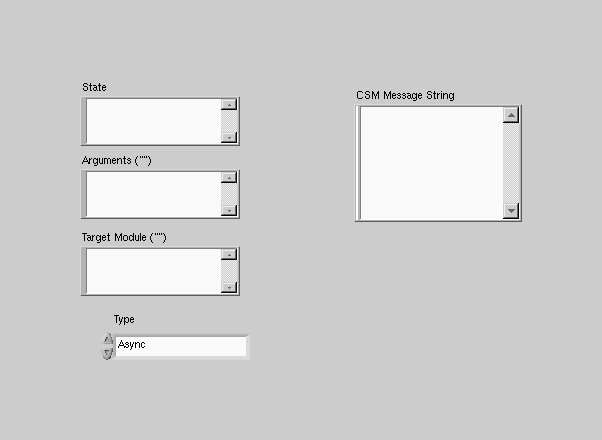
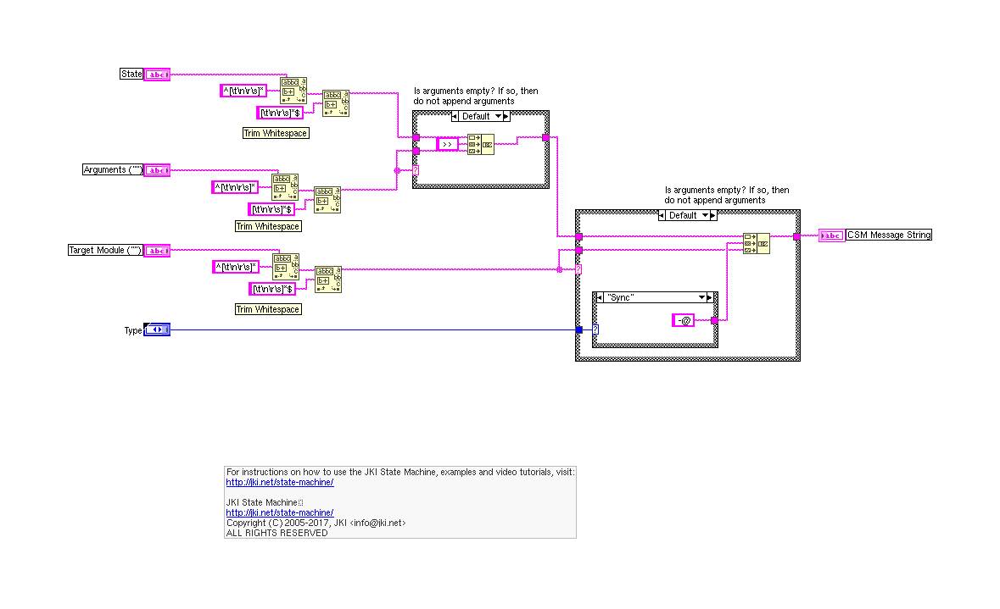
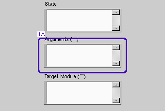
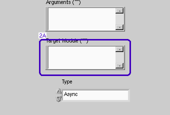
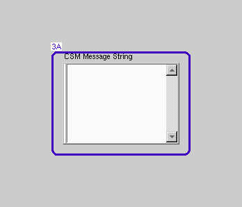

LabVIEW VI Comparison Report
06:59:24 10/29/2026
First VI: /workspace-base/src/user.lib/_NEVSTOP/Communicable State Machine(CSM)/Build State String with Arguments++.viSecond VI: /workspace/src/user.lib/_NEVSTOP/Communicable State Machine(CSM)/Build State String with Arguments++.vi
| Front Panel Overview | ||
|
 |

| |
| Block Diagram Overview | ||
|
 |

|
- Front Panel
- Front Panel Position/Size
- Block Diagram Functional
- Block Diagram Cosmetic
- VI Attribute
Detailed Information
1. Front Panel - String
| /workspace-base/src/user.lib/_NEVSTOP/Communicable State Machine(CSM)/Build State String with Arguments++.vi | /workspace/src/user.lib/_NEVSTOP/Communicable State Machine(CSM)/Build State String with Arguments++.vi | |

|
 |
- String "Arguments ("")" - description : changed from "" to "Argument information. Arguments contained in <b>State with Arguments</b> will be replaced.\r\n\r\n-- <b>Indicators</b> --"
2. Front Panel - String
| /workspace-base/src/user.lib/_NEVSTOP/Communicable State Machine(CSM)/Build State String with Arguments++.vi | /workspace/src/user.lib/_NEVSTOP/Communicable State Machine(CSM)/Build State String with Arguments++.vi | |
|
 |

|
- String "Target Module ("")" - description : changed from "" to "Target module. If empty, the default module in <b>State with Arguments</b> will be used.\r\n\r\n-- <b>Indicators</b> --"
3. Front Panel - String
| /workspace-base/src/user.lib/_NEVSTOP/Communicable State Machine(CSM)/Build State String with Arguments++.vi | /workspace/src/user.lib/_NEVSTOP/Communicable State Machine(CSM)/Build State String with Arguments++.vi | |

|
 |
- String "CSM Message String" - description : changed from "" to "Concatenated CSM message string.\r\n\r\n### CSM - Replace Marks in Messages.vi\r\nFacilitates editing multiple CSM message strings by providing a batch replacement function for marks. There are four marks that can be replaced:\r\n- `<param>` mark: Usually represents the same argument.\r\n- `<target>` mark: Usually represents the same target.\r\n- `<1>` mark: Represents custom mark 1.\r\n- `<2>` mark: Represents custom mark 2.\r\n\r\n<b>Example</b>: The terminal `<target>` is connected to the string `DAQDevice`. The <b>States with Replace Token</b> string is:\r\n\r\n text\r\n Initialize -@ <target>\r\n Configure -@ <target>\r\n Read -@ <target>\r\n Close -@ <target>\r\n\r\nThe <b>States</b> output is:\r\n\r\n text\r\n Initialize -@ DAQDevice\r\n Configure -@ DAQDevice\r\n Read -@ DAQDevice\r\n Close -@ DAQDevice\r\n\r\n> - Ref: Message Building API\r\n\r\n-- <b>Controls</b> --"
4. VI Attribute - Documentation (VI Properties)
- description text : changed from "This VI is obsolete. Please use `Build Message with Arguments++.vi`" to "This VI is obsolete. Please use `Build Message with Arguments++.vi`
## Build Message with Arguments++.vi
Builds CSM message strings and operation strings.
> - Ref: Message Building API
> [!NOTE] Polymorphic VI Options
> - Build Message with Arguments(Auto Check).vi: Concatenates message strings based on the input message symbols.
> - Build Asynchronous Message with Arguments.vi: Concatenates and generates CSM asynchronous message strings. The message type symbol is `->`.
> - Build No-Reply Asynchronous Message with Arguments.vi: Concatenates and generates CSM asynchronous message strings without reply. The message type symbol is `->|`.
> - Build Synchronous Message with Arguments.vi: Concatenates and generates CSM synchronous message strings. The message type symbol is `-@`.
> - Build Interrupt Broadcast Message.vi: Concatenates and generates CSM interrupt broadcast strings.
> - Build Normal Broadcast Message.vi: Concatenates and generates CSM status broadcast strings.
> - Build Register Message.vi: Concatenates and generates CSM register state operation strings.
> - Build Unregister Message.vi: Concatenates and generates CSM unregister state operation strings.
> - CSM - Replace Marks in Messages.vi: Replaces placeholders in message strings.
> - CSM - Replace Mark with String Array.vi: Replaces tags in a single state string with strings from an array and merges them into a string describing a group of states.
> - Ref: CSM Inter-module Communication Types
### Build Message with Arguments(Auto Check).vi
Concatenates and generates CSM message strings. The message type symbol is automatically detected based on the input State with Arguments.
> - Ref: Message Building API
> - Ref: CSM Message Target Module Description
-- Controls --
- State with Arguments: CSM state string, which can contain arguments and target module information.
- Arguments (""): Argument information. Arguments contained in State with Arguments will be replaced.
- Target Module (""): Target module. If empty, the default module in State with Arguments will be used.
-- Indicators --
- CSM Message String: Concatenated CSM message string.
### Build Synchronous Message with Arguments.vi
Concatenates and generates CSM synchronous message strings. The message type symbol is `-@`, for example:
Message >> Arguments -@ Target
> - Ref: Message Building API
> - Ref: Synchronous Message
> - Ref: CSM Message Target Module Description
-- Controls --
- State with Arguments: CSM state string.
- Arguments (""): Argument information. Arguments contained in State with Arguments will be replaced.
- Target Module (""): Target module. If empty, the default module in State with Arguments will be used.
-- Indicators --
- CSM Message String: Concatenated CSM message string.
### Build Asynchronous Message with Arguments.vi
Concatenates and generates CSM asynchronous message strings. The message type symbol is `->`, for example:
Message >> Arguments -> Target
> - Ref: Message Building API
> - Ref: Asynchronous Message
> - Ref: CSM Message Target Module Description
-- Controls --
- State with Arguments: CSM state string.
- Arguments (""): Argument information. Arguments contained in State with Arguments will be replaced.
- Target Module (""): Target module. If empty, the default module in State with Arguments will be used.
-- Indicators --
- CSM Message String: Concatenated CSM message string.
### Build No-Reply Asynchronous Message with Arguments.vi
Concatenates and generates CSM asynchronous message strings without reply. The message type symbol is `->|`, for example:
Message >> Arguments ->| Target
> - Ref: Message Building API
> - Ref: Asynchronous Message
> - Ref: CSM Message Target Module Description
-- Controls --
- State with Arguments: CSM state string.
- Arguments (""): Argument information. Arguments contained in State with Arguments will be replaced.
- Target Module (""): Target module. If empty, the default module in State with Arguments will be used.
-- Indicators --
- CSM Message String: Concatenated CSM message string.
### Build Status Broadcast Message.vi
Concatenates normal status message strings. The message format is as follows:
Status >> Arguments ->
// The following strings are equivalent operations. // More operation characters are defined for easier typing and memorization. Status >> Arguments -> Status >> Arguments -> > - Ref: Message Building API -- Controls -- - State with Arguments: CSM normal status message string. - Arguments (""): Argument information. Arguments contained in State with Arguments will be replaced. -- Indicators -- - CSM Message String: Concatenated CSM message string. ### Build Interrupt Broadcast Message.vi Concatenates interrupt status messages. The message format is as follows: Status >> Arguments -> > - Ref: Message Building API -- Controls -- - State with Arguments: CSM interrupt status message string. - Arguments (""): Argument information. Arguments contained in State with Arguments will be replaced. -- Indicators -- - CSM Message String: Concatenated CSM message string. ### Build Register Message.vi Concatenates register state operation message strings. The message format is as follows: //[source-state]@[source-module] >> [response-message]@[response-module] -> status @ Source >> API @ Target -> Example: Bind the "Download Finished" message of the Downloader module to the "Start Play" API of the Player module. // Bind the "Download Finished" message of the Downloader module to the "Start Play" API of the Player module DownloadFinished@Downloader >> StartPlay@Player -> // When executing the message within the Player module, "Player" can be omitted DownloadFinished@Downloader >> StartPlay -> // When multiple modules have the "Download Finished" message, // use * to bind this message from all modules to the "Start Play" API of the Player module DownloadFinished@* >> StartPlay@Player -> > - Ref: Message Building API > - Ref: CSM Registration > - Ref: CSM Registration Location > - Ref: CSM Broadcast Priority -- Controls -- - Target CSM: Name of the CSM module registering to the status. - Source CSM (* as Default): Name of the CSM module publishing the status. - Status: Status to register. - API (If "", Same As "Status"): Name of the API in the registering module that responds to the status. - Priority (No Change): Priority of the broadcast after registration. -- Indicators -- - CSM Message String: Concatenated CSM message string. ### Build Unregister Message.vi Concatenates unregister state operation message strings. The message format is as follows: //[source-state]@[source-module] >> [response-message]@[response-module] -> status @ Source >> API @ Target -> Example: Cancel the binding of the "Download Finished" message of the Downloader module to the "Start Play" API of the Player module. // Cancel binding of the "Download Finished" message of the Downloader module to the "Start Play" API of the Player module DownloadFinished@Downloader >> StartPlay@Player -> // When executing the message within the Player module, "Player" can be omitted DownloadFinished@Downloader >> StartPlay -> - In Worker Mode, the module's internal registration rules will only be automatically unregistered after all nodes have exited. - In Chain of Responsibility Mode, the module's internal registration rules will be automatically unregistered as the node exits. > - Ref: Message Building API > - Ref: CSM Registration > - Ref: CSM Registration Location -- Controls -- - Target CSM: Name of the CSM module registering to the status. - Source CSM (* as Default): Name of the CSM module publishing the status. - Status: Registered status. - API (If "", Same As "Status"): Name of the API in the registering module that responds to the status to be unregistered. -- Indicators -- - CSM Message String: Concatenated CSM message string. ### CSM - Replace Marks in Messages.vi Facilitates editing multiple CSM message strings by providing a batch replacement function for marks. There are four marks that can be replaced: - `` mark: Usually represents the same argument. - ` ` mark: Usually represents the same target. - `<1>` mark: Represents custom mark 1. - `<2>` mark: Represents custom mark 2. Example: The terminal ` ` is connected to the string `DAQDevice`. The States with Replace Token string is: text Initialize -@ Configure -@ Read -@ Close -@ The States output is: text Initialize -@ DAQDevice Configure -@ DAQDevice Read -@ DAQDevice Close -@ DAQDevice > - Ref: Message Building API -- Controls -- - States with Replace Token: CSM state string with replacement marks. - : `` mark, which usually represents the same argument. - : ` ` mark, which usually represents the same target. - <1>: Custom mark 1. - <2>: Custom mark 2. -- Indicators -- - States: State string after replacement. ### CSM - Replace Mark with String Array.vi Replaces tags in a single state string with strings from an array and merges them into a string describing a group of states. Example: For `Draw >> <1> -@ Painter`, Tag should be set to `<1>` Input array `[Line, Circle, Rectangle]`. The result will be: Draw >> Line -@ Painter Draw >> Circle -@ Painter Draw >> Rectangle -@ Painter -- Controls -- - single-line text: Single-line state string containing tags like `<1>`, `<2>`, `<3>`, etc. - Substitution Mark: The tag to replace, such as `<1>`, `<2>`, `<3>`, etc. - replace string: The array of strings to replace the tag with. -- Indicators -- - States: The merged state string." - Help Tag